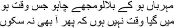
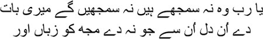
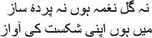

2
ho has written this dastan, really? Is it I, Saadat Hasan Manto, or my ghost? All his life, Manto hankered for conversation with just one man. Mirza Asadullah Khan Ghalib. Mirza was particularly fond of a ghazal of Abdur Kadir Bedil, which he often used to quote from. My story is echoed around the world, but I am only an emptiness. Bedil seemed to have written the lines specifically for Mirza. Did he have me in mind too?
I’ve always felt that Mirza and I are two mirrors facing each other. Within both the mirrors is an emptiness. Two voids staring at each other. Can voids have a dialogue between themselves?
Many a time have I held solitary conversations with Mirza. He has always been silent. How can he respond from the grave anyway? But now that I have waited so many years, I am sure that Mirza will talk to me. I am in my grave too. I realized soon after coming to Pakistan in 1948 that I would have to make arrangements for my own burial now, so that I could soon lie down in the deep darkness under the earth. On my gravestone it would be written: ‘Here lies Saadat Hasan Manto in eternal rest. With him have been buried all the mysteries of writing stories. Under tons of earth he lies, wondering who among the two is the greater writer of stories—Allah or He.’ They have no idea that since Manto came to earth with Khuda’s madness in his own head, stories sought him out all his life. Manto never went seeking stories.
Mirza will talk to me now, we will converse continuously. All those things that Mirza hasn’t been able to tell anyone, that I haven’t been able to tell anyone, all—we’ll talk of them all as we live in our graves. Mirza is lying far away in Dilli, in Sultanji’s graveyard near Nizamuddin Aulia, and I, in Lahore, in Mian Saheta’s. It was the same country once, after all; no matter how many barbed wires there may be on the surface, in the depths of the earth, it’s one country, one world. Has anyone ever been able to prevent the dead from talking to one another?
What is autumn? And what do they call spring, for that matter? We survive in our cages round the year, still we sing our laments, we could fly once upon a time. Mirza had written all this in a ghazal. Mirza had never succeeded in flying; nor did I. But now we’ll grow wings in the darkness within our graves; friends, we will tell you all those stories that you’ve never heard before. We’ll draw aside all those curtains which you’ve never peeped behind. There’s no Manto without Mirza, perhaps there’s no Mirza without Manto either.
Let the conversation begin from the graves. Adaab.
Saadat Hasan Manto
January 18, 1955
Once the introduction was translated, I looked at the date beneath Manto’s signature. It reared its head like a conundrum. A long still silence, and I was turned to stone. Was winter here? Tabassum’s voice came from somewhere far away, ‘Aren’t you writing any more today?’ Looking at her, I saw a cloud of fog.
— What’s the matter?
— Hmm …
— Aren’t you writing any more today? You’re very lazy, you’re such a shirker.
— You’re right.
— About what?
— Lazy, shirker.
— What’s wrong with you? Tabassum’s voice held the fortissimo notes of a violin.
— This date …
— Yes, that’s when Manto wrote the introduction.
— How is that possible?
— Why not?
— This is the date on which Manto died.
— This date? Tabassum seemed to be speaking from a cavern.
— Yes. Considering the way he died, Manto couldn’t possibly have written anything on this particular day.
— In that case …
— This is a forgery.
— Meaning?
— Someone else wrote it, claiming to be Manto.
Tabassum laughed. —That’s excellent.
— What!
— A forgery will be published with Manto’s name.
— How can that be allowed?
— Why not?
— But is it right, Tabassum?
— Forget about right and wrong. You want to read a novel about Mirza Ghalib written by Manto, don’t you?
— I do.
— Then just assume this is the novel that Manto wrote.
— Why should I?
— Do you know for sure that everything Manto wrote was really his? Maybe someone just claimed they were written by Manto. Just the way I’m telling the story and you’re writing it. You, I, Mirza Ghalib—one day none of us will be here, not even our names, but the stories will still be floating about. That’s not insignificant, is it? Now come on, start writing.

Be kind enough to call me any time you want
I’m not the past which cannot come back
I can see you across this enormous distance, Mirza sahib, sometimes you’re on your back, staring upwards, sometimes you’re curled up as though the grave is your mother’s womb. Now and then you sit up and rock back and forth, muttering to yourself; at other times I watch you pacing up and down, your head bowed. But as for me, I prefer lying down most of the time, here in the darkness. You’ve been in your grave since 1869, it must have become your home by now, mustn’t it? I have only just arrived from the world above, it’s been a tempestuous life, which is why all I want is some rest now. You must have felt the same way in the beginning. I know only too well that you couldn’t bear your life at the end anymore. You expressed your hurt and your unhappy existence in a letter to Yusuf Mirza. ‘I’m a man, after all, not a demon or djinn,’ you wrote.
Eventually who you were became irrelevant to you. And yet this was the key question of your life; but towards the end everything seemed meaningless, you only spoke of death and of Allah over and over again. You never read the namaz or kept rozas, you laughingly called yourself a half-Muslim, and you were forced to drift away from Umrao Begum because of this; and yet the same person focused his eyes only on God in the final years. In letter after letter you wondered why Khuda did not do you the kindness of taking you away from this earth. I knew you couldn’t keep up the fight, the ghazal had deserted you much earlier, Munirabai’s memory was nothing but a set of bones, even your favourite wine was no longer available regularly. Whom can a man turn to in such a situation but Allah? When I think of your last days I am reminded of this ghazal:
Why does time erase me thus, O Lord?
I’m no redundant letter on the page of the world
But was it your destiny to be obliterated this way, practically starving, ailing, blind?
When I think of your life, I picture a dust storm. They’re riding across the river on horseback from Samarkand. The whirling blades in their hand glint in the sunlight. They have covered such vast expanses, traversed so many Karbalas of bloodshed and slaughter, on their way to India. It feels as though I’m seeing them in a dream, or are they on a cinema screen? These ancestors of yours, their days go by just riding, riding. If they come across human habitation there’s killing and looting, and then pitching tent in the desert at night to rest. A fire has been lit, the meat is being roasted, the rabab or the dilruba is being played. Some of them are sitting at a distance, singing the songs of desert nomads to the infinite sky. In some of the tents, festivals of flesh are underway with plundered women. You were quite proud of your martial forefathers, Mirza sahib, even if you never picked up a sword yourself. But despite your pride you knew in your heart that taking other people’s lives and giving up their own was all there was to their existence. Interspersed by the company of women, wine, and the arrogance of power. I know that the lives of these fighting forbears of yours were like a dream to you. ‘There are two Ghalibs,’ you said once, ‘one of them is a Seljuq Turk, who consorts with badshahs, and the other is homeless and humiliated, weighed down by debt.’ The Ghalib who moved about with kings, the descendant of Turkish soldiers, was the Ghalib of your dreams. But with the sun about to set on the Mughal Empire, where were you to find that Ghalib of yours? And there was destiny too, your personal destiny, which had sowed the seeds of poetry in your life. The French poet Rimbaud had said, ‘I am the other’; you were born with this ‘other’ as your constant companion. Such a person can only die like a mangy dog.
I’ve heard that your great grandfather used to work in the Samarkand army. Your grandfather Kukan Beg Khan arrived in this land with this storm of riders. Have I got it right, Mirza sahib? Please correct me if I’m wrong. What’s this, why do you sit up to stare at me in surprise? I know very well you enjoy hearing these tales. Doesn’t your blood boil, Mirza sahib? You get to see that first Ghalib, don’t you? The one who used to associate with kings. I am not mocking you, nor am I joking. I was no less proud of being Kashmiri. That I even dared to write to Jawaharlal was out of that same Kashmiri pride. We’re sons of the soil, Mirza sahib, the particles of grit in the soil are also God’s creation. If Khuda had not been as magnanimous to me as he was to you, do you think I could have been lying here in my grave so soon? Like you, I rejected him too, but to him all his sons are equal.
I shall remind you of everything afresh, Mirza sahib. You may have forgotten a great deal during the long time you’ve spent in your grave. Naturally. There’s so much we cannot remember even when alive, and death comes down like a curtain, behind which you can see nothing. In 1947, I saw how the curtain of death wipes out everything. By the grace of God you did not have to see this. You saw 1857. But if you had seen 1947, Mirza sahib, you would have killed yourself. Or, perhaps, the sword would have flashed in your hand, too, as it did in your ancestors’. The world has never seen so much killing, so many rapes, such treachery, all of which began in 1947 on the pretext of there being two nations; today, you lie in a grave in one of those countries, and I, in a grave in the other.
I cannot speak in an orderly fashion, Mirza sahib, I stray from one subject to another. Even in this cold grave a fire seems to smoulder somewhere within. That’s why I have been ranting. But I was talking of your grandfather Kukan Beg Khan, wasn’t I? I mustn’t be distracted, although I haven’t sipped Johnny Walker in a long time. When I moved to Pakistan I had no choice but to get used to country liquor. You were fond of French wine, weren’t you, though eventually there was no option but to drink rum. But I must get to the point, Mirza sahib, to the story of Kukan Beg Khan. Oh my, I can see you stirring again. You do love hearing about your ancestors, don’t you? Do you feel the drumbeats of galloping horses in your blood? You cannot forget that you’re a beggar, a convict? And what was it that people called Ghalib? Muskhil-pasand. The lover of adversity. Remember? Muhmal-go, some people used to say. The poet raves. Do you remember this ghazal?

She doesn’t understand my words, O Lord, she never will
Change her heart, and if you don’t, change my tongue
This is the madness that talking begets. As for me, I couldn’t stop talking once I started. Do you know why? I would wonder whether people understood what I was saying. When I read your letters, I understood how addicted you were to words. In letter after letter you kept talking. It was by reading your letters, Mirza sahib, that I started hearing your voice one day. Do you remember what you said?

I’m not the flowering of a song, nor the flow of melody
I am the echo of the shattering sound of my defeat
That was the first time I saw a convicted, defeated man. You’ll never know, Mirza sahib, how many of my stories they have appeared in—these people who have been reduced to the echoes of the sound of their own defeat, I will tell you some of their tales too in the course of our conversation. Who is Manto without them? Nothing but a gust of wind.
But now I simply must talk about Kukan Beg Khan. I know you’re waiting for the story. Just as the earth in the grave covers and erases everything, stories such as these have also probably been spent now. Kukan Beg Khan, your grandfather, arrived here in this country to take a job in the army of the nawab of Lahore. This particular nawab didn’t live very long. What was a mercenary like Kukan Beg Khan to do, then? He would have to seek out another nawab or badshah or, at the very least, a maharaja. Mercenaries survive this way, after all, just like whores, no matter how their swords glint. You knew what the life of the mercenary was like, Mirza sahib, which was why you put the sword aside. Am I right? You cannot fool a son of a bitch like Manto.
And so your grandfather reached Dilli. But when, ya Allah? Just as Dilli was on the brink of bankruptcy. Aurangzeb had destroyed everything, and then came one invasion after another. Badshah Alam’s Dilli was nothing but the skeleton of the Mughal Empire. The Mughal court was panting like a rheumatic horse. Although Kukan Beg Khan received a jagir as the general of fifty of Shah Alam’s cavalry troops, he realized that there was no hope of advancement here. After that he even joined the army of the Maharaja of Jaipur. But he couldn’t amass any wealth. I believe he died in Agra.
Now your father, your walid, Abdullah Beg hurried to Lucknow, where he got a job in Nawab Asaf-ud-Daula’s army. As is inevitable with mercenaries, he had to move from one state to another. Abdullah Beg’s credo was to keep the ruler happy and, whenever his crown appeared shaky, look for a different nawab or badshah to work for. Like those women, Mirza sahib, whom I’ve seen standing in Amritsar’s Kachha Ghania, in Lahore’s Hira Mandi, on Dilli’s GB Road, on Bombay’s Foras Road. Their battle raged through the night. I’ll tell you their stories, Mirza sahib, the stories of their flesh, the stories of their hearts, the stories of the blood and sweat and toil and tears. Their stories were in search of me for years altogether, and in my journey through these stories I came to believe in Allah one day; only he was their lifelong companion—Rahim, Bismillah. No one was willing to believe those stories; they accused me of making them up. I was called a whore’s writer, a pornographer, because I wrote about them. But how could I remain silent, Mirza sahib? Did so many, so many thousands of women line the pavements of Hira Mandi and Foras Road out of choice? Forgive me, Mirza sahib, Shafia Begum, my wife, also used to say, why do you digress so much, Saadat sahib?
Gustakhi maaf, huzoor, I beg your pardon, let me rush through the history. When storytelling gets the better of me, I do not know myself what paths I will wander off on. I quite enjoy tiring people out by leading them through labyrinths. Once upon a time I floated a rumour that America was going to buy the Taj Mahal. What did I mean? Everyone began to ask how it could buy the Taj Mahal. And even if it did, how could it take the Taj away? I said that the Americans are capable of anything, they have built a new machine with which they will take the Taj Mahal away. Many people believed me, Mirza sahib. And why shouldn’t they? Everyone believes America can do anything it likes, it is a magician. Do people realize that you cannot do anything you like just because you have a machine for it?
Oh yes, as I was saying, you’re staring at me expectantly, so I’d better finish the story now. Your father did not hold his commission in Lucknow very long, he had to move to Hyderabad, to Nawab Nizam Ali Khan’s army, where he became the general of a battalion of three hundred foot soldiers. He spent several years in the Nizam’s forces. But something went wrong—not everything is written down in history, Mirza sahib, and what if it is, anyway—Abdullah Beg moved to Alwar, to the army of Rao Raja Bakhtawar Singh. History has not recorded how and in which battle your father died. History never writes about mercenaries, after all; but it is mercenaries who are used to create the wondrous episodes of history. As you must remember, you were five years old.
You became an orphan, a yateem, at five. He who is without a walid is necessarily a yateem. Not just you, but also your brother Yusuf and your sister Chhoti Khanum. Your father did not have a house of his own. You didn’t have one either in all your life. Your brother, sister and you spent your childhood and adolescence in Agra’s Kale Mahal—your maternal grandfather’s enormous haveli, but can you tell me when you realized that your family had no house of its own? I would love to know how you spent your days in Kale Mahal. Your mother, your grief-stricken mother, must have spent all her time quietly in a corner of the women’s quarters, the zenana mahal. I can picture the three of you going up to her, she would wrap her wings around all of you; maybe she would mutter, ‘Allah, be just to my children.’
Sometimes I see you tossing and turning in your grave, groaning for your mother, ‘Ammi … meri ammijaan …’
I hear her voice, the begum whose name none of us knows. Your mother says, ‘Asad … jaan … my son …’
— Take me home, ammi.
— Where?
— Anywhere.
Why do you lie down again, Mirza sahib? Are you not enjoying what I’m telling you? Then you had better say something, Mirza sahib. Forget my nonsense, my bakwas.